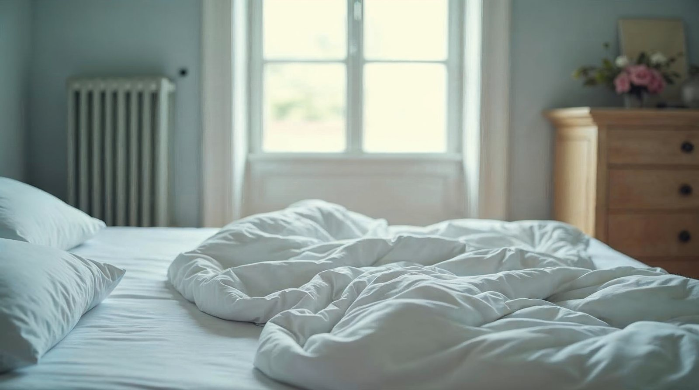
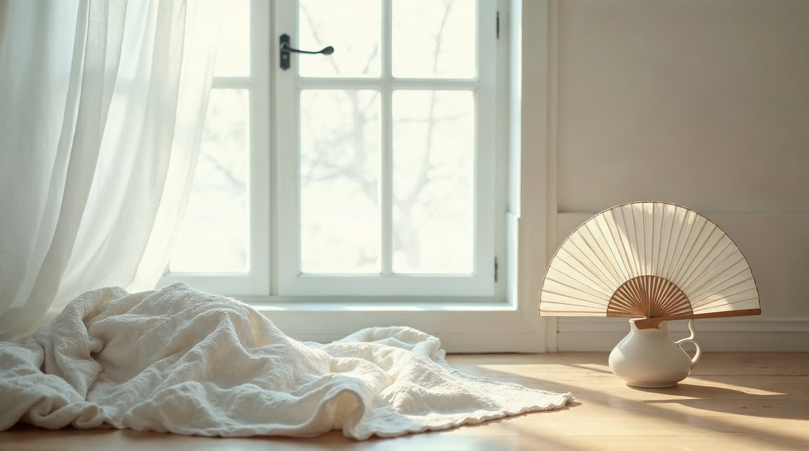
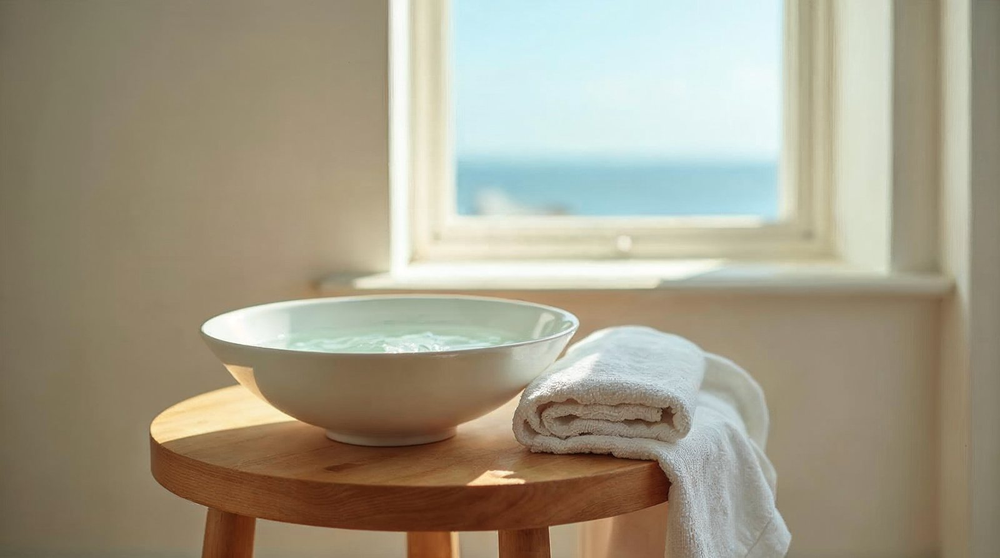
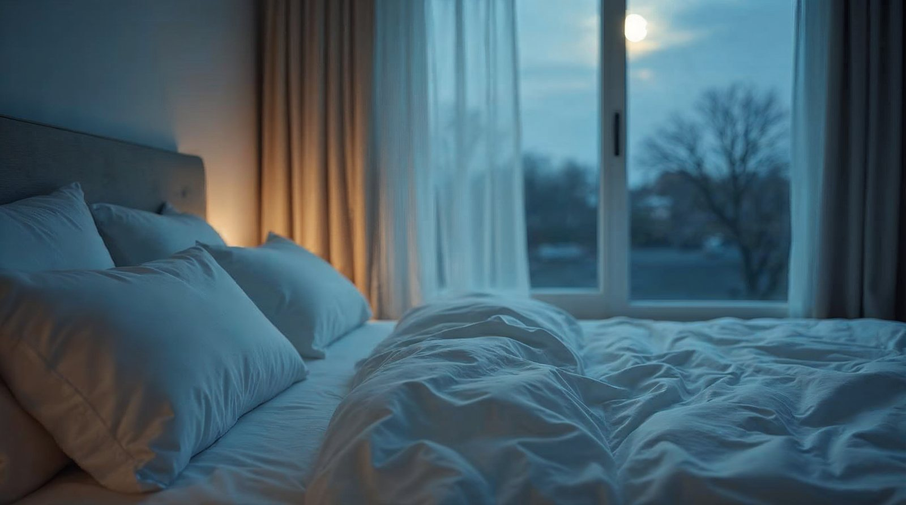
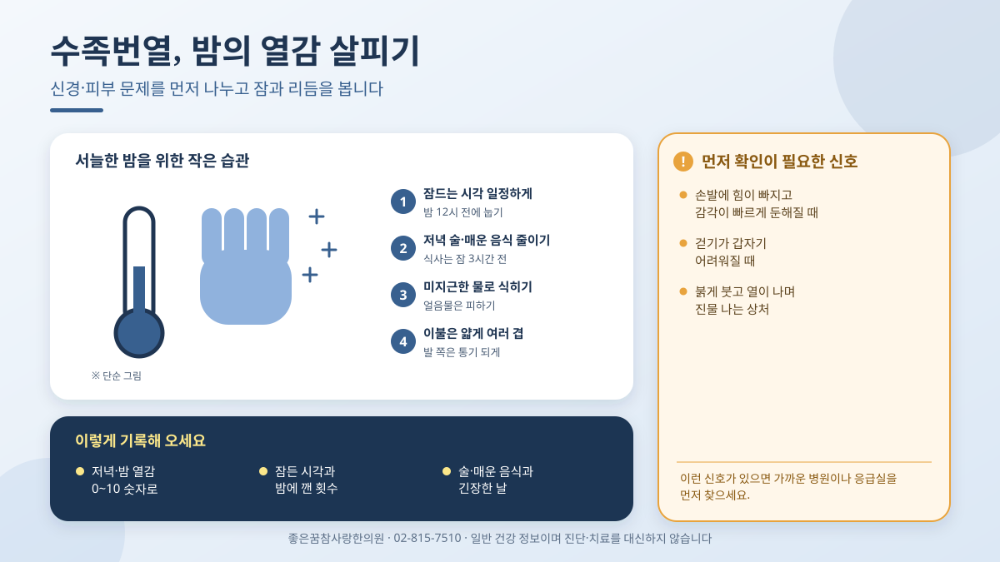

이종호 한의사 감수좋은꿈참사랑한의원 대표원장 (한의사 면허번호 19769)발행 2026-11-26 · 수정 2026-11-26
이 글의 차례
밤이 깊어 불을 끄고 눕습니다. 몸은 피곤한데 발바닥이 후끈후끈 달아오릅니다. 이불 밖으로 발을 내놓았다가, 조금 지나 서늘해지면 다시 넣고, 또 뜨거워지면 꺼냅니다. 손바닥도 마찬가지라 차가운 벽이나 베개 바깥쪽에 손을 대고 있어야 겨우 잠이 듭니다.
진료실에서 이런 이야기를 하시는 분들은 대개 조금 머쓱해하십니다. 손발이 찬 사람은 많다는데 자기는 반대라고, 겨울에도 양말을 못 신는다고요. 다른 사람에게는 별일 아닌 것처럼 들리지만, 정작 본인은 이 화끈거림 때문에 잠을 설치고 하루가 무거워집니다.
한의학에서는 손바닥과 발바닥, 그리고 가슴 한가운데가 답답하게 달아오르는 것을 오심번열이라고 부르고, 손발에 열감이 도드라지는 것을 흔히 수족번열이라고 합니다. 겉으로 열이 나는 것은 아닌데 손발바닥이 속에서부터 화끈거리는 느낌이 중심입니다.
이 글에서는 수족번열이 무엇인지, 왜 생기는지, 비슷해 보이는 다른 불편과 어떻게 구분하는지, 그리고 생활과 진료에서 무엇을 함께 살피는지 차례로 정리해 보겠습니다.
수족번열은 어떤 느낌인가요
수족번열을 겪는 분들은 대개 비슷하게 표현하십니다. 손바닥과 발바닥이 속에서부터 화끈거리고, 열이 빠져나가지 못하고 갇혀 있는 느낌이라고요. 실제로 만져 보면 조금 따뜻하거나 붉은 기운이 돌기도 하지만, 겉으로는 별 차이가 없는데 본인만 뜨겁게 느끼는 경우도 많습니다.
이 느낌은 낮보다 저녁과 밤에 더 심해지는 경향이 있습니다. 하루 활동을 마치고 몸이 쉬려는 시간, 따뜻한 이불 속에 들어갔을 때 손발바닥의 열감이 도드라집니다. 그래서 잠들기 어렵거나, 자다가 깨서 발을 꺼내 놓는 일이 반복됩니다.
가슴 한가운데가 답답하게 달아오르거나, 입이 마르고, 얼굴로 열이 오르며, 밤에 땀이 나는 느낌이 함께 오는 분도 계십니다. 반대로 몸통과 무릎 아래는 오히려 서늘한데 손발바닥만 화끈거린다는 분도 있어서, 열감이 어디에 머무는지를 함께 봅니다.
왜 손발바닥이 화끈거릴까요
수족번열은 한 가지 이유로 설명하기 어렵습니다. 몸의 열을 식히고 내보내는 조절이 흔들리거나, 몸을 촉촉하게 적셔 주는 바탕이 부족할 때, 혹은 긴장과 피로가 오래 쌓였을 때 손발바닥에서 먼저 열감으로 드러나는 경우가 많습니다.
- 잠이 짧거나 늦게 자는 날이 이어진 경우
- 과로와 긴장이 오래 쌓인 경우
- 갱년기 무렵 몸의 열 조절이 흔들리는 경우
- 맵고 기름진 음식, 술을 자주 드시는 경우
- 출산이나 큰 병을 앓은 뒤 몸이 많이 소모된 경우
- 물을 적게 마시고 입과 피부가 자주 마르는 경우
한의학에서는 몸을 적셔 주고 식혀 주는 바탕을 음이라고 부릅니다. 이 바탕이 부족해지면 상대적으로 열이 도드라져 보이게 되는데, 이것을 흔히 음이 허해서 생기는 열이라고 표현합니다. 손발바닥과 가슴의 열감, 입마름, 밤 땀, 얕은 잠이 함께 오는 모습이 대표적입니다.
또 긴장과 스트레스가 오래 이어지면 몸이 늘 바짝 긴장한 상태로 지내면서 열이 위와 바깥으로 몰리기 쉽습니다. 이런 분들은 손발바닥 열감과 함께 뒷목과 어깨가 뻣뻣하고, 쉽게 짜증이 나며, 입이 쓰다는 말씀을 하시기도 합니다.

다른 화끈거림과 어떻게 구분하나요
손발이 화끈거리는 느낌은 수족번열 말고도 여러 상황에서 생깁니다. 비슷해 보여도 살펴야 할 방향이 다르기 때문에 먼저 구분이 필요합니다.
당뇨나 비타민 부족, 일부 약과 관련된 말초신경 문제는 발끝에서 시작해 점점 위로 올라오는 저림과 화끈거림, 감각이 둔해지는 느낌이 특징입니다. 양말을 신은 것처럼 감각이 무디거나, 바닥을 디딜 때 모래를 밟는 느낌이 든다면 이쪽을 먼저 확인해야 합니다.
발목 안쪽 신경이 눌리는 족근관 증후군은 발바닥 한쪽이나 안쪽 복사뼈 아래가 저리고 화끈거리며, 오래 서 있거나 걸은 뒤 심해집니다. 무좀이나 접촉 피부염은 열감과 함께 가려움, 각질, 물집 같은 피부 변화가 보입니다.
갱년기 열감은 얼굴과 가슴, 목으로 갑자기 열이 확 오르며 땀이 나는 것이 중심이고, 손발바닥 열감은 그와 함께 오기도 합니다. 갑상선 기능이 높아지면 손발이 따뜻하고 땀이 많으며 가슴이 두근거리고 체중이 줄기도 합니다. 그래서 화끈거림과 함께 오는 다른 변화를 꼭 함께 여쭙니다.
손발이 찬 사람에게도 생길 수 있나요
뜻밖에도 그렇습니다. 낮에는 손발이 차서 고생하다가 밤에 이불 속에 들어가면 손발바닥이 화끈거린다는 분이 계십니다. 몸의 열이 고르게 돌지 못하고 한쪽에는 모자라고 다른 쪽에는 몰리는 모습으로 볼 수 있습니다.
이런 분들은 차다고 해서 무작정 데우거나, 뜨겁다고 해서 무작정 식히기보다 몸 전체의 흐름을 고르게 하는 쪽으로 살펴야 합니다. 그래서 진료실에서는 손발 온도를 낮과 밤으로 나눠 여쭙고, 배와 등, 무릎 아래의 온도도 함께 봅니다.

계절과 생활에 따라 달라지나요
수족번열은 여름에 더 힘들 것 같지만, 겨울에 더 불편하다는 분도 많습니다. 난방이 센 방에서 두꺼운 이불을 덮고 자면 몸의 열이 빠져나갈 길이 막혀 손발바닥으로 몰리기 쉽기 때문입니다. 실내가 건조하면 입마름과 피부 건조까지 겹칩니다.
생활의 큰 변화 뒤에 시작되는 경우도 있습니다. 밤샘이 잦은 일을 시작했을 때, 출산 뒤 밤중 수유가 이어질 때, 가족을 오래 돌보며 잠이 부족할 때처럼 몸이 쉬지 못하는 시기에 손발바닥 열감이 처음 나타났다는 말씀을 자주 듣습니다.
한의학에서는 어떻게 나눠 보나요
같은 손발바닥 열감이라도 결이 다릅니다. 입이 마르고 밤에 땀이 나며 잠이 얕고 몸이 마른 편이라면 몸을 적셔 주는 바탕이 부족한 쪽으로 봅니다. 쉽게 화가 나고 얼굴이 붉어지며 입이 쓰고 변비가 있다면 긴장과 열이 위로 몰린 쪽으로 봅니다.
몸이 무겁고 잘 붓고 손발바닥이 끈적하게 달아오르고 기름진 음식 뒤에 심해진다면 습과 열이 함께 머무는 쪽으로 봅니다. 결에 따라 생활에서 먼저 줄일 것과 챙길 것이 달라지기 때문에, 진료실에서는 열감 하나만이 아니라 함께 오는 모습을 두루 여쭙니다.
먼저 이렇게 여쭙니다
처음 오시면 저는 대략 이런 순서로 여쭙니다. 미리 생각해 오시면 이야기가 수월해집니다.
- 화끈거림은 손바닥과 발바닥 전체인가요, 발끝이나 한쪽만인가요?
- 하루 중 언제 가장 심하고, 무엇을 하면 덜해지나요?
- 저림, 감각 둔함, 가려움, 피부 변화가 함께 있나요?
- 잠은 몇 시에 들고, 밤에 몇 번 깨시나요?
- 밤에 땀이 나거나 입이 마르고 얼굴로 열이 오르나요?
- 당뇨, 갑상선 질환, 갱년기 변화, 드시는 약이 있나요?
화끈거리는 시간대에 찍어 둔 손발 사진이 있다면 붉은 기운을 비교하는 데 도움이 됩니다.
최근 건강검진 결과지가 있다면 혈당과 갑상선 수치를 함께 볼 수 있어 도움이 됩니다. 이미 신경과나 내과에서 검사를 받으셨다면 그 결과도 함께 가져와 주세요.

일상에서 먼저 해 볼 수 있는 것
수족번열은 하루의 리듬과 꽤 가깝습니다. 아래 가운데 지금 가장 쉬운 것 하나부터 골라 보세요.
- 잠드는 시각을 일정하게, 밤 12시 전에는 눕기
- 저녁에는 맵고 기름진 음식과 술을 줄이기
- 낮 동안 물을 조금씩 자주 마시기
- 잠들기 전 미지근한 물에 손발을 잠깐 담갔다가 물기를 닦기
- 이불은 너무 두껍지 않게, 발 쪽은 통기가 되도록
- 잠들기 전 휴대폰 화면과 업무 생각을 내려놓는 시간 갖기
손발이 뜨겁다고 얼음물에 담그는 분이 계신데, 너무 찬물은 잠깐 시원하다가 오히려 다시 달아오르는 느낌을 키우기도 합니다. 미지근한 물로 짧게 식히고, 물기를 잘 닦은 뒤 통기가 되는 면 양말이나 맨발로 지내는 편이 편안합니다.
저녁 식사는 잠들기 세 시간 전에는 마치는 것이 좋습니다. 배가 부른 채로 누우면 몸이 소화에 열을 쓰느라 밤의 열감이 더 도드라질 수 있습니다. 늦은 시간 커피, 매운 야식, 술 한 잔이 다음 날 밤까지 영향을 주는 분도 계십니다.
마음의 긴장도 살펴보세요. 하루 종일 쫓기듯 지낸 날 밤에 화끈거림이 더 심하다면, 잠들기 전 5분 정도 등을 대고 누워 내쉬는 숨을 길게 하는 연습이 도움이 될 수 있습니다. 몸이 쉬는 쪽으로 넘어가야 열도 가라앉을 틈이 생깁니다.
손발바닥 피부도 돌봐 주세요. 열감이 오래가면 피부가 건조해지고 갈라지기 쉽습니다. 씻은 뒤에는 물기를 잘 닦고, 손발바닥에 보습제를 얇게 발라 두시면 화끈거릴 때 덜 따갑게 느껴지는 분이 계십니다. 너무 끈적한 크림은 오히려 답답할 수 있으니 가벼운 것으로 고르세요.
낮에 햇볕을 쬐며 걷는 시간도 도움이 됩니다. 낮에 몸을 충분히 움직이고 햇빛을 보면 밤에 몸이 쉬는 쪽으로 넘어가기 쉬워집니다. 다만 늦은 저녁의 격한 운동은 오히려 몸을 달궈 잠들기 어렵게 할 수 있습니다.
한의원에서 함께 살필 수 있는 경우
- 밤마다 손발바닥이 화끈거려 잠들기 어려운 경우
- 손발바닥 열감과 함께 입마름, 밤 땀, 얕은 잠이 있는 경우
- 갱년기 무렵부터 손발과 얼굴로 열이 자주 오르는 경우
- 출산이나 큰 병, 과로 뒤 몸이 많이 지치면서 열감이 생긴 경우
- 긴장하면 손발이 뜨거워지고 뒷목과 어깨가 굳는 경우
좋은꿈참사랑한의원에 오시면 모든 분의 맥을 먼저 짚고, 필요하면 혀도 살피면서 몸이 어느 쪽으로 기울어 있는지 봅니다. 화끈거림이 신경이나 피부 문제에서 오는 것은 아닌지도 이때 함께 가려 봅니다.
진찰한 내용을 바탕으로 잠과 식사 리듬에서 먼저 바꿔 볼 것을 정하고, 침이나 한약 상담 가운데 지금 상태에 맞는 것을 함께 정합니다. 한약을 상의할 때는 드시는 약을 모두 확인하고 신중히 정합니다. 임신 중이거나 임신을 준비 중이라면 먼저 알려 주시고 산부인과와 상의하시도록 안내합니다.
당뇨나 갑상선 질환으로 치료 중이시라면 그 진료는 처방한 병원에서 그대로 이어 가셔야 하고, 드시는 약은 상의 없이 멈추지 않습니다. 한의원 진료는 그 곁에서 잠과 열감, 몸의 리듬을 함께 살피는 자리입니다.
이렇게 기록해 오시면 상담이 쉬워집니다
2주 정도만 간단히 적어 와 주세요. 열감이 심한 날과 덜한 날의 하루를 나란히 놓으면 실마리가 보입니다.
- 손발바닥 열감을 0부터 10까지 숫자로, 저녁과 밤에 한 번씩
- 잠든 시각과 깬 시각, 밤에 깬 횟수
- 저녁 메뉴와 술, 커피, 매운 음식 표시
- 바빴거나 긴장했던 날 표시
- 밤 땀, 입마름, 얼굴로 열이 오른 날
- 생리 기간이나 갱년기 증상이 함께 있었던 날
기록을 해 보면 열감이 잠이 늦은 날, 술을 마신 날, 긴장한 날에 몰려 있다는 것을 알게 되는 분이 많습니다. 그것만 보여도 무엇을 먼저 바꿀지가 한결 분명해집니다.

서늘한 밤을 되찾기까지
손발바닥의 화끈거림은 남들 눈에는 작은 불편으로 보일 수 있지만, 매일 밤 잠을 흔든다는 점에서 결코 가볍지 않습니다. 잠이 흔들리면 다음 날의 피로와 긴장이 커지고, 그 긴장이 다시 밤의 열감을 키우는 고리가 생깁니다.
그 고리를 푸는 시작은 작은 것 하나일 때가 많습니다. 잠드는 시각을 30분 당기기, 저녁 술 한 잔 줄이기, 잠들기 전 미지근한 물에 손발 담그기. 이번 주에는 하나만 골라 보세요. 다음에 오시면 기록을 함께 보며 몸이 어떻게 답했는지 살펴보겠습니다.
이런 증상은 먼저 확인이 필요합니다
- 손발에 갑자기 힘이 빠지거나, 감각이 빠르게 둔해지거나, 걷기가 갑자기 어려워진 경우
- 손발이 붉게 붓고 뜨거우며 붉은 기운이 번지거나 열이 나는 경우, 또는 상처가 낫지 않고 진물이 나는 경우
이런 신호가 있으면 한의원보다 가까운 병원이나 응급실을 먼저 찾으세요.
함께 읽으면 좋은 글
- 당뇨가 있는데 발끝이 저리고 화끈거리거나 감각이 둔해지는 말초신경병증은 어떻게 살피나요?
- 안쪽 복사뼈 아래가 저리고 발바닥이 화끈거리는 발목 터널 증후군(족근관 증후군)은 어떻게 살피나요?
- 손발이 저리고 차가울 때는 어떤 점을 먼저 확인하나요?
- 갱년기에 밤마다 땀에 젖어 깨는 날이 많을 때는 어떻게 하나요?
- 손발이 저린 것과 시린 것은 어떻게 다르게 설명하면 될까요?

여쭙는 것
- 화끈거림은 손바닥과 발바닥 전체인가요, 발끝이나 한쪽만인가요?
- 하루 중 언제 가장 심하고, 무엇을 하면 덜해지나요?
- 저림, 감각 둔함, 가려움, 피부 변화가 함께 있나요?
생활에서 해 볼 것
- 잠드는 시각을 일정하게, 밤 12시 전에는 눕기
- 저녁에는 맵고 기름진 음식과 술을 줄이기
- 낮 동안 물을 조금씩 자주 마시기
한의원에서 함께 살필 것
- 밤마다 손발바닥이 화끈거려 잠들기 어려운 경우
- 손발바닥 열감과 함께 입마름, 밤 땀, 얕은 잠이 있는 경우
- 갱년기 무렵부터 손발과 얼굴로 열이 자주 오르는 경우
먼저 확인이 필요한 신호
- 손발에 갑자기 힘이 빠지거나, 감각이 빠르게 둔해지거나, 걷기가 갑자기 어려워진 경우
- 손발이 붉게 붓고 뜨거우며 붉은 기운이 번지거나 열이 나는 경우, 또는 상처가 낫지…
한눈에 보는 표
| 구분 | 핵심 |
|---|---|
| 여쭙는 것 | 화끈거림은 손바닥과 발바닥 전체인가요, 발끝이나 한쪽만인가요? 하루 중 언제 가장 심하고, 무엇을 하면 덜해지나요? |
| 생활에서 해 볼 것 | 잠드는 시각을 일정하게, 밤 12시 전에는 눕기 저녁에는 맵고 기름진 음식과 술을 줄이기 |
| 한의원에서 함께 살필 것 | 밤마다 손발바닥이 화끈거려 잠들기 어려운 경우 손발바닥 열감과 함께 입마름, 밤 땀, 얕은 잠이 있는 경우 |
| 먼저 확인이 필요한 신호 | 손발에 갑자기 힘이 빠지거나, 감각이 빠르게 둔해지거나, 걷기가 갑자기 어려워진 경우 손발이 붉게 붓고 뜨거우며 붉은 기운이 번지거나 열이 나는 경우, 또는 상처가 낫지 않고 진물이 나는 경우 |
자주 묻는 질문
손발이 뜨거우면 몸에 열이 많은 체질인가요?
꼭 그렇지는 않습니다. 몸을 적셔 주는 바탕이 부족해 상대적으로 열이 도드라지거나, 긴장과 피로로 열이 한쪽에 몰리는 경우도 많아 맥과 잠, 땀을 함께 보고 판단합니다.
뜨거울 때 얼음물에 담가도 되나요?
너무 찬물은 잠깐 시원하다가 다시 달아오르는 느낌을 키우기도 합니다. 미지근한 물로 짧게 식히고 물기를 잘 닦는 편을 권합니다.
발끝만 화끈거리고 저린데 이것도 수족번열인가요?
발끝에서 시작해 위로 올라오는 저림과 감각 둔함은 말초신경 문제일 수 있어 먼저 확인이 필요합니다. 당뇨가 있으시다면 처방한 병원에 꼭 알려 주세요.
갱년기 열감과 함께 오는데 한약을 먹어도 되나요?
진찰한 뒤 필요하다고 판단되면 상담합니다. 호르몬제나 다른 약을 드신다면 모두 확인하고 신중히 정하니 약 봉투를 가져와 주세요.
좋은꿈참사랑한의원은 재진 때 지난번 이야기부터 이어서 여쭙니다. 진료시간과 예약은 오시는 길에서 확인하세요.
어디서 상담받을 수 있나요?
좋은꿈참사랑한의원은 서울 동작구 만양로2길 2 신성빌딩 3층·5층(서울 동작구 상도동, 7호선 상도역 3번 출구 근처)에 있습니다. 한의사 3명(이종호 대표원장, 조영기 수석진료원장, 정원영 진료원장)이 진료합니다. 진료시간은 평일 09:30~20:00(점심 13:00~14:00), 토·일·공휴일 09:30~15:00이며, 방문 전 전화로 확인을 권합니다. 예약은 네이버 예약, 카카오톡 상담, 전화 02-815-7510로 받습니다.
이 글은 일반적인 건강 정보이며 개인의 진단이나 치료를 대신하지 않습니다. 증상이 있거나 복용 중인 약이 있다면 진료를 통해 확인하세요. 치료 효과는 개인마다 다를 수 있습니다.
작성 기준: 일반적으로 알려져 있는 건강 정보를 참고해 정리했습니다(대표원장 감수). 증상 기록은 1~2주 동안 하루 1회, 비슷한 시간에 적어 오시면 지난 상태와 비교하기 쉽습니다.